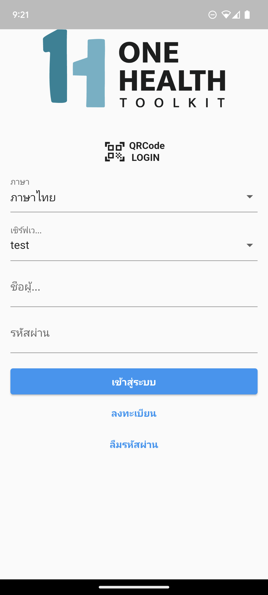

OHTK Mobile
OHTK mobile application for community and official reporting.

Setting up OHTK-Mobile
What you'll need
If necessary, add the Android emulator to your path
export PATH=$PATH:~/Library/Android/sdk/emulator/
Install
Get latest version of ohtk-mobile from github:
git clone https://github.com/onehealthtoolkit/ohtk-mobile.git
cd ohtk-mobile
Run flutter build command
flutter pub run build_runner build --delete-conflicting-outputs
Change server to test server
Change settings to
opensur.test
Config Android emulator to use localhost custom url endpoint
# List all available emulators
> emulator --list-avds
# Start emulator in write mode
# [AVD_NAME] such as Pixel_4_XL_API_25
> emulator -writable-system -netdelay none -netspeed full -avd [AVD_NAME]
# Wait until emulator is completely started
# Login as root
> adb root
# Remount emulator path /system to writable
> adb remount
# Upload hosts file to emulator
> adb push /path/to/hosts /system/etc/
# List active reverse ports
> adb reverse --list
# Reverse port from localhost server port 8000
> adb reverse tcp:80 tcp:8000
Run Mobile App
Now you're ready to actually test the app! Open your IDE and run the flutter program:
- ex. Visual Studio Code: Run > Run without Debugging
Try logging in with one of the users created via the Management System.
Using OHTK-Mobile
Inviting Users
Once the One Health Surveillance Management System is configured correctly, the local authority can begin recruiting and training volunteers for the Reporter App. The authority must create unique Invitation Codes to distribute to volunteers during training meetings, so that the volunteers’ reports are submitted to the correct system. The Reporter App can be downloaded from either the Google Play Store or Apple App Store, and volunteers must simply enter their unique Invitation Code to login to enable them as qualified reporters. Their reports will be automatically directed to the correct country and region according to the Authority’s configuration of OHTK-MS. Once downloaded and the Invitation Code is applied, the Reporter App can be used by volunteers to collect a variety of One Health reports and submit them to OHTK-MS for the local authority to review and escalate to a case for investigation if required.
Notifications and Alerts
Important notifications are delivered via the Reporter App, such as quarantine instructions for sick animals, follow-up questionnaires for volunteers involved in cases or outbreaks, and reminders for volunteer trainings. The Reports are automatically submitted to OHTK-MS for analysis and review by local authorities, but if they match predefined Case Definitions then they will be automatically escalated to Cases. For example, if after training the volunteer notices that 15 of their pigs are experiencing illness, they would use the Reporter App to create a new Report with observation notes such as photos of the symptomatic pigs, observable symptoms, length of illness, and number of sick animals. If the Case Definition for Swine Flu defines a Case for investigation as more than 10 sick pigs from the same area, then the volunteer’s Report will be automatically escalated to a Case and appropriate local agencies will be notified via SMS or email.